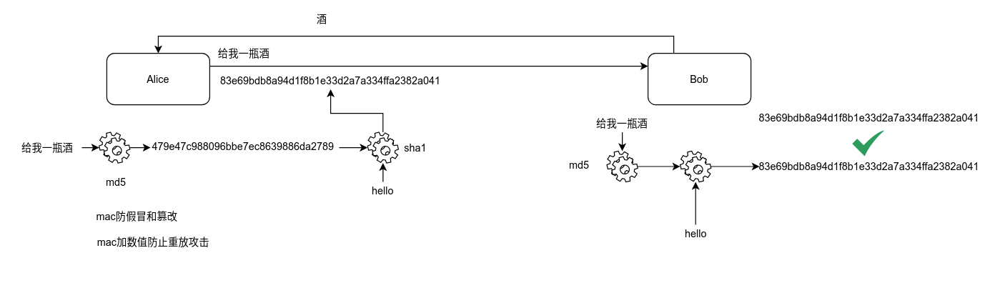
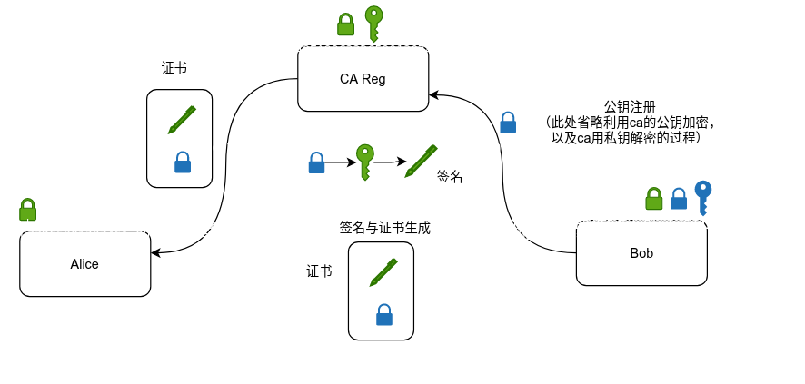

现代密码学之消息的通讯
信息安全面临的威胁
以下的内容整理自Vita君的爸爸周自恒老师最近新书《图解密码技术》推介时图灵社区的分享的部分内容，虽然从个人的角度来说，大部分内容已经知晓，但长时间不用多少还是有些生疏，在周老师循序渐进的讲述下更有融会贯通之感，这里记录一下，以备不时之需。
信息安全要解决的问题，一定源自于真实的案例，在实际的消息通讯中，其面临着如下几种类型的威胁
- 窃听（私密信息的泄漏）
- 篡改（信息被修改）
- 假冒（伪装成信息的发送者）
- 否认（信息已经发送，但是事后却不承认）
窃听

alice在想bob讨酒喝的时候，信息面临着被X窃听的可能。这种情况非常常见，任何通讯中间节点只要被利用，都可以做到这一点，甚至是局域网内的混杂模式的抓包也能获得部分信息。
篡改

如图，X在发出讨酒的请求时被X拦截了，X仅仅是修改了收货地址，当Alice尝试询问Bob酒（钱）在何方时，Bob就彻底蒙圈了。
假冒
X直接伪装成了Alice向Bob讨酒喝，Bob给了后再要求Alice偿还相应的（酒钱）时，就轮到Alice蒙圈了
否认
这种情形下，Alice应该时个老酒鬼了，借了酒喝却不给钱不认账了
对应的解决方式

上文中介绍的四类威胁，分别对应了四种特性。现代密码学中也有对应的方式来解决各个问题
非对称加密

这里面做这样一个约定，非对称加密中有成对出现的公钥和私钥，图中用锁表是公钥，钥匙表示私钥。其实某些情况下可以互换，用其中一个加密，用另一个进行解密。
消息认证码

为了验证消息的真实性，可以对消息本身，或者消息的digest进行一定的处理，这里面的hello是同样的key，可以使用公钥分发的机制进行分发。Alice和Bob在有相同的key（hello），可以校验消息的真实性。
另外，有一种攻击是重放（流量）攻击，可以通过在消息认证码中增加额外的唯一随机数来防范。
中间人攻击
即使有了非对称加密，消息认证码等机制，通信依旧可能被劫持，在互相传递密钥的时候，依旧面临着风险。
签名
签名的生成和上面传递消息，加解密用的密钥恰恰相反。当生成签名时，使用私钥加密。验证时，使用公钥解密。
证书

证书引入了第三方的证书认证中心，证书的签发，实际上要比图中稍微复杂一些，要通过自己的公钥生成csr（证书请求），提交给ca中心。ca中心使用自己的私钥为其签名，并将签名，bob的公钥一并打包成证书发送给alice。

alice收到证书后，可以通过已经存储的ca中心的公钥解密出bob的公钥，进而完成安全的通讯。
针对证书的中间人攻击
单单引入证书依旧可能存在安全因患，在证书下发的时候依旧可能存在中间人攻击。
证书链

为了解决下发证书的问题，引入了证书链。其罪顶层时根证书，证书也是一层一层的，可以分层获取下一层的公钥，而跟证书的下发往往是岁电脑系统一块的。